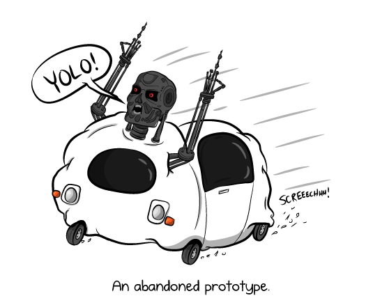
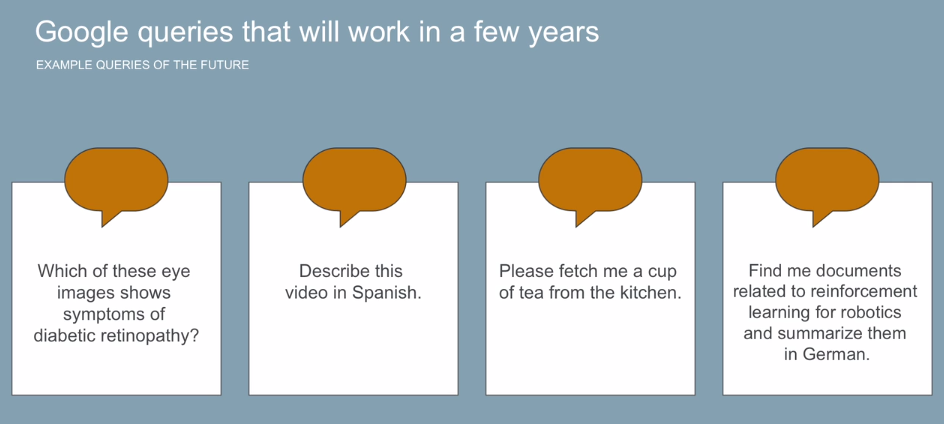
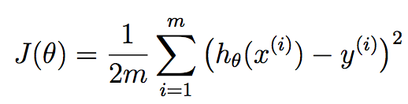
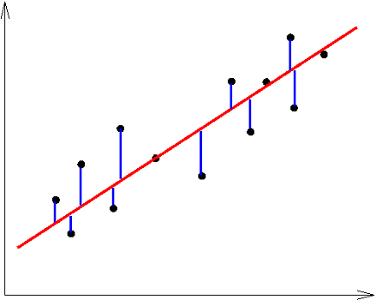
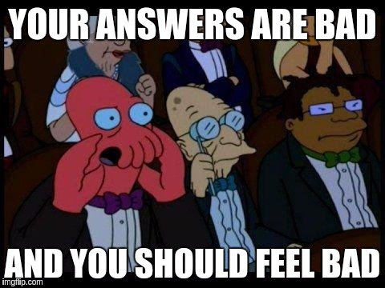
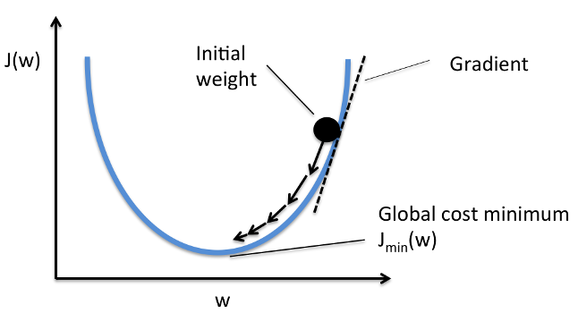
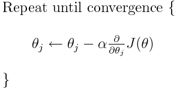
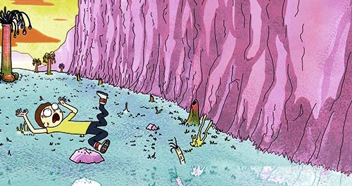

A machine that learns to perform better from experience.
"A computer program is said to learn from experience E with respect to some class of tasks T and performance measure P, if its performance at tasks in T, as measured by P, improves with experience E." - Tom Mitchell

Cars, ships, planes, drones, and ...pancake flipping robots?
Visual search, shopping w/ no checkout lines, cucumber sorting.

Translation, understanding queries, support automation, virtual coaches.
Generative music, AI writers for articles and movies.
training your machine and each pass is called an epoch. Once satisfied with machine's labels, you may stop training.Apple!
Not apple.
Not apple.
Apple!
/
Ok. Optimizing self based on error...
AWW YIS.
/
/
You got {{numWrongs}} wrong. Feel bad! You got one wrong. Not bad... All good!
Epoch:
{{timesTrained - 1}}
Accuracy:
{{readableAccuracy}}
%
Click on the button above! This is a robot that learns to identify apples among other fruits. Let's call him Gary. Explanation on the next slide.
Go outside, look at houses and get area and price. Plot all house data out on a graph with area on the x-axis and price on the y-axis.
The intuition is, we want our machine (who we'll call Gary, after our apple-bot) to draw a line that best fits our data. From this line, we will be able to predict house prices given house areas our machine hasn't seen yet.

Remember the formula for a line? y = mx + b.
This is called our model.
We want Gary to draw that line for us. He can do that by plugging in values to m and b.
These are called weights and are usually denoted by the greek letter Theta (Θ).
It is Gary's job to find the best values for the weights, to get the best fitting line.
But how do we know if it's the best fitting line?
The cost function is how you tell Gary he's wrong. Specifically, it tells Gary how wrong he was.
Here's the formula.

m - number of houses in our dataset (training examples)
h - just means apply our weights to our model and get the result
All this is doing is summing up all of our errors and squaring them.
Visually, it looks like this:

We're just getting the distance of each training example from the line our machine guessed, squaring them, adding them all together and dividing the result by 2 * num training examples.
Ok, now that Gary knows how bad his answers are, what can he do?

The answer is to turn to meth math!
Turns out with the magic of derivatives (we will derive the cost function), we can show Gary if a weight should be increased or decreased to minimize the cost function.

A helpful analogy for gradient descent is that we're throwing Gary off a hill.
Another name for derivatives are gradients (thus gradient descent).
I won't go into details of how to get derivatives (lots of nice tuts online) but just think of them as gravity, telling Gary's poor body where to go.
The more downwards Gary falls, the lower the cost function, thus the less we shame him for failing us.
So it follows that Gary's goal is to try to reach the bottom.
Each time Gary trains, all we have to do is subtract each weight by a number (learning rate) times the gradient. Think of learning rate as how big a fall off the hill Gary takes at a time.

We just keep doing the descent and adjusting our weights until our cost function doesn't decrease by much (like less than some tiny number 0.0001).

Once we're satisfied that Gary has fallen enough, he's ready to predict house prices with his weights!
We'll find some house we haven't seen yet, get their area as x, apply Gary's weights and we should get a number that predicts the price of that house! Recall y = mx + b.
Get your price by calculating price = weight1 * house area + weight2
As a recap, takeaway the following: